邹林





1、登陆成功，自动进入首页
2、左侧导航自：
①固定导航：门户、消息、通讯录、待办（现审批+待办）、工作台（收藏、应用分类、个人左侧导航）
②个人信息：按当前人信息展示【头像（如为空，则使用默认头像）、姓名】。
3、如登陆用户有管理员权限，则有“管理员设置”入口。所有用户均有搜索入口
4、首页根据租户123门户的配置进行展示
需求描述
用例描述
正常过程
N1 进入消息页
N0010 鼠标移入“消息”区域，则有“消息”字样展示
N0020 鼠标点击“消息”区域，则在消息页面打开租户对应的IM（当前页面内容不销毁）
N0030 用例结束
N2 进入通讯录页
N0010 鼠标移入“通讯录”区域，则有“通讯录”字样展示
N0020 鼠标点击“通讯录”区域，在通讯录页面打开租户对应的通讯录（当前页面内容不销毁）
N0030 用例结束
N3 查看工作台
N0010 鼠标移入“工作台”区域，则有“工作台”字样展示
N0020 鼠标点击“工作台”区域，则浮窗展示租户及当前用户对应的工作台内容（工作台内容详情参见 工作台弹窗。当前首页内容不销毁）
N0030 点击工作台内具体应用，则在应用浏览器内新tab页打开应用对应的页面（当前页面内容不销毁）----如该应用已在应用浏览器内打开，则跳转到该tab页即可
N0040 用例结束
N4 进入一级导航应用
N0010 鼠标移入一级导航页面，则有对应导航名称字样展示
N0020 鼠标点击一级导航区域，则在应用浏览器内新tab页打开应用对应的页面（当前页面内容不销毁）----如该应用已在应用浏览器内打开，则跳转到该tab页即可
N0030 用例结束
N5 搜索
N0010 鼠标移入“搜索”区域，则有对“搜索”字样展示
备注：根据租户功能自动对应匹配。如用户未开通wiki，则无wiki
N0020 鼠标点击“搜索”区域，则浮窗展示搜索框内容，搜索浮窗展示详见搜索弹窗页面
N0030 在搜索框内搜索内容，则在应用浏览器内新tab页打开搜索弹窗-搜索结果页。（当前页面内容不销毁）
N0040 用例结束
N6 系统配置置
N0010 鼠标移入“系统配置”区域，则有对“系统配置”字样展示
N0020 鼠标点击“系统配置”区域，则在浏览器内的新标签页打开租户管理后台
N0030 用例结束
N7 进入首页中应用
N0010 在首页点击任意内容，如原设置为在需新标签页打开，则均在应用浏览器内新tab页打开应用对应的页面（当前页面内容不销毁）----如该应用已在应用浏览器内打开，则跳转到该tab页即可
N0020 用例结束
一、导航设置
1、固定导航：首页、消息、通讯录（租户有开通这些功能则有）、待办；工作台、搜索（一定存在）；应用浏览器（如当前有打开其他应用则固定有）；系统配置（用户为管理员才展示，浏览器新标签页打开）
租户配置：租户可配置其他应用到一级导航。设定最大值（需与Ued根据具体空间讨论阀值）
2、当前用户信息：【头像（如无则展示默认）+姓名】（鼠标移入浮窗：个人信息（点击弹出个人信息弹窗）、修改密码、退出登陆）
3、用户设置导航：用户可自己设置左侧导航，超过一定数量/如技术可行，则超出本屏就收起，点击图标展示更多、拖动亦可查看更多（滚动区域仅限待办以下？）
二、页面跳转原则
1、一级导航各自拥有一个独立页面，在打开另外一个一级页面时，原页面不销毁，再次点击还能查看离开之前的页面
2、打开非一级导航中独立页面时，按后台设置是当前页面打开还是在新标签页中打开
3、工作台内的其他应用（除一级导航外），打开则在一级导航内新增一个固定位置，图标为应用图标。打开一个新的，则自动覆盖旧的
4、点击浏览器的返回，则先在当前一级导航的页面内返回，当到达当前页面最后一页，则再在一级页面之间返回
三、消息通知
1、三种消息通知方式：
一级导航栏小红点：当消息、待办内有未读消息/未完成的待办时，有小红点及具体数字
网页title提醒：当有新消息/新的待办时，在当前网页title前加“【新的消息】”/“【新的待办】”/" 【新的审批】"
浏览器弹窗提醒：当有新消息（因待办已集成至IM，故不单独提醒）时，如当前不在消息/待办页面，则使用浏览器的通知功能进行通知
2、各消息具体通知方式：
消息内容 提醒方式 备注
1 IM内新消息
1、一级导航消息小红点及数字提示
2、网页title提醒：【新的消息】
3、浏览器弹窗提醒：事项类型、头像、姓名，消息内容
2 新到的待办
1、一级导航首页小红点及数字提示
2、网页title提醒：【新的待办】
3、浏览器弹窗提醒：事项类型、头像、姓名，消息内容--如IM内已有待办消息，则不再提示
3 新到的审批
1、一级导航首页小红点及数字提示
2、网页title提醒：【新的审批】
3、浏览器弹窗提醒：事项类型、头像、姓名，消息内容--如IM内已有待办消息，则不再提示
四、其他
引导开启浏览器通知、本页面的通知
关闭页面时弹窗阻止